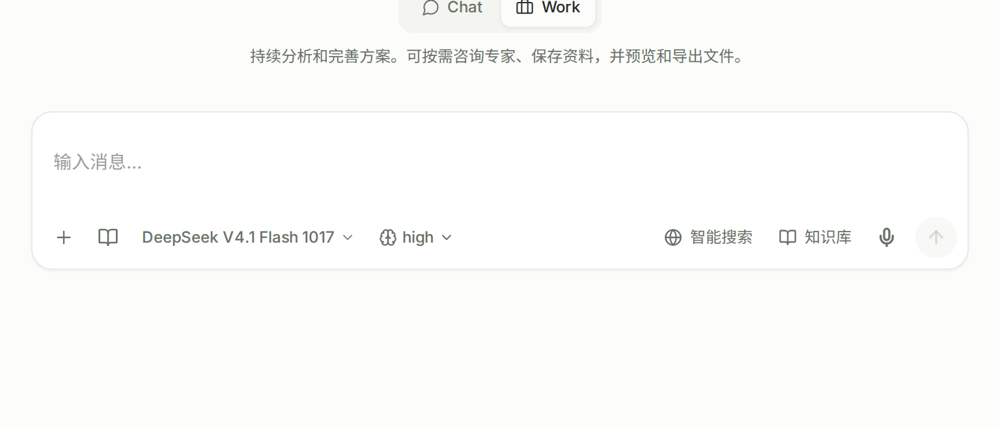
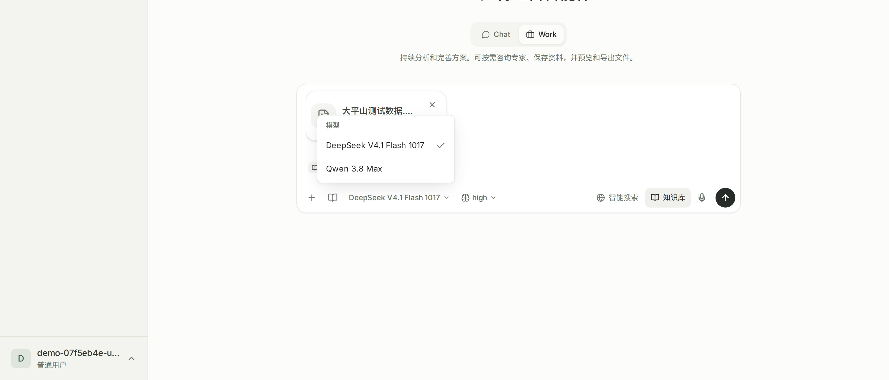
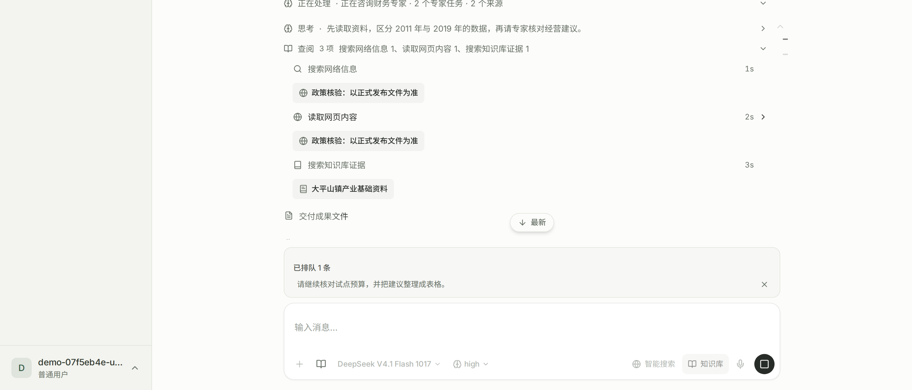

输入框与发送
每次提问前，输入框里的几个选择决定助手怎么工作：用哪个模型，想多深，是否联网，是否查知识库。多数问题不需要改动。需要查证最新政策时开启联网搜索，需要参考政策和案例时开启知识库。
#输入框的组成
输入框分两层：上面是写问题的地方，下面是一排功能按钮。

从左到右，这排按钮依次是：
| 按钮 | 名称 | 作用 | 详细说明 |
|---|---|---|---|
| + | 添加附件 | 选择要上传的文件或图片，随这条消息一起发送 | 上传图片和文件 |
| 书本图标 | 选择技能 | 为这条消息选一套固定的工作方法 | 技能 |
| 模型名称 | 选择模型 | 选择由哪个模型回答 | 见下文 |
high、medium 等 | 思考强度 | 决定助手回答前想多久、想多深 | 见下文 |
| 地球图标「智能搜索」 | 联网搜索开关 | 开启后助手可以上网查资料 | 联网搜索 |
| 书本图标「知识库」 | 知识库开关 | 开启后助手可以读取知识库 | 知识库 |
| 向上箭头 | 发送 | 发出这条消息；助手回答时变成方块「停止」 | 见下文 |
「智能搜索」和「知识库」是开关。按钮变成高亮，表示已开启；再点一次关闭。
#选择模型
点模型名称，在弹出的列表里选一个。当前有两个模型：
- DeepSeek V4.1 Flash：默认选项。
- Qwen 3.8 Max。
两个模型都能用于 Chat 和 Work。对同一个问题，两个模型的措辞和详略可能不同。想比较，可以在同一段对话里换一个模型再问一次，或者用分支保留两个版本。
按 Ctrl + Shift + M 可以直接打开模型列表。

#选择思考强度
思考是助手在写出回答之前的内部推理：它先分析问题，再决定下一步做什么。思考强度决定这个推理做多深。
点思考强度按钮，会看到当前模型支持的供应商原生档位：
| 模型 | 可选档位 | 默认 |
|---|---|---|
| DeepSeek V4.1 Flash | off、low、high、max | high |
| Qwen 3.8 Max | off、low、medium、xhigh | medium |
两个模型的档位并不相同，界面只列出当前模型实际支持的英文原生值。off 关闭思考，其余档位从低到高增加推理量。不手动选择时，使用当前模型的中档：DeepSeek 为 high，Qwen 为 medium。没有单独的「跟随模式」选项；切换模型或沿用旧对话时，不受支持的旧值会归一到当前模型的中档。
怎么选：
- 改写一句话、查一个数字、问一个简单概念：
off或low即可，回答更快。 - 需要比较、判断、推算：选较高的档位，例如 DeepSeek 的
max或 Qwen 的xhigh。思考越多，等待的时间通常越长。
思考开启时，回答上方的过程区会出现「思考」行，点开可以读到助手的推理文字。见回答的组成。
#写问题并发送
点输入框，输入问题。
- 按
Enter发送。 - 按
Shift+Enter换行，不发送。 - 用中文输入法选词时按
Enter，只是确认选字，不会发送。
好的问题写清三件事：要判断什么、已有什么条件、结果给谁用。例如：
附件是我们村去年的收支明细表。请用 5 句话概括收入和支出的主要构成，并指出最需要关注的 3 个数据。#停止回答
助手回答时，发送按钮变成方块。点它，助手立即停止，已经生成的内容会保留。
#回答进行中继续发送
助手还在回答时，你可以继续写下一条消息并发送。这条消息不会打断当前回答，而是显示在输入框上方，写着「已排队 N 条」。当前回答结束后，排队的消息自动发送。
高峰时段，排队和开始处理都可能需要多等一会儿，界面会保留消息，不会丢。

对排队的消息：
- 点这条消息，它会回到输入框，你可以修改后重新发送。
- 点消息右侧的 × 取消它。
回答进行中，不能添加附件，所以排队的消息只能是文字。